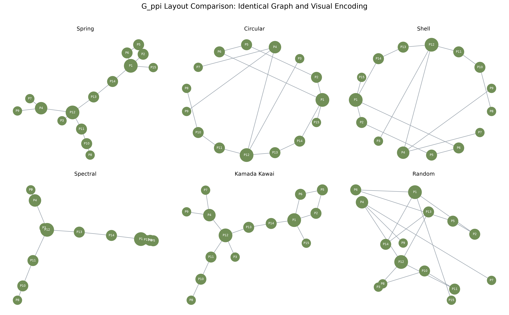

Objective and data source
The exercise reuses the required teaching definition and saves every calculated
artifact through the deterministic Python pipeline. Relevant data:
outputs/analysis_summary.json.
Verified result and visualization
Kamada-Kawai was selected for this realization. Calculated average clustering is 0.000.

Python implementation
The implementation below is taken from the canonical project modules. Open any module to inspect the complete surrounding code and imports.
def build_ppi_graph() -> nx.Graph:
"""Recreate Section 8.3's 15-node Watts-Strogatz protein graph."""
proteins = [f"P{i}" for i in range(1, 16)]
graph = nx.watts_strogatz_graph(n=len(proteins), k=3, p=0.3, seed=SEED)
return nx.relabel_nodes(graph, {i: proteins[i] for i in range(len(proteins))})
def create_layout_figures(graph: nx.Graph) -> dict[str, Path]:
"""Draw G_ppi with the six required layouts using identical encodings."""
layouts: dict[str, Callable[[], dict]] = {
"spring": lambda: nx.spring_layout(graph, seed=SEED),
"circular": lambda: nx.circular_layout(graph),
"shell": lambda: nx.shell_layout(graph),
"spectral": lambda: nx.spectral_layout(graph),
"kamada_kawai": lambda: nx.kamada_kawai_layout(graph),
"random": lambda: nx.random_layout(graph, seed=SEED),
}
degrees = dict(graph.degree())
sizes = [230 + 165 * degrees[node] for node in graph.nodes()]
saved: dict[str, Path] = {}
def draw(ax: plt.Axes, positions: dict, title: str) -> None:
nx.draw_networkx(
graph,
positions,
ax=ax,
with_labels=True,
node_size=sizes,
node_color="#718F57",
edge_color="#99A3AD",
width=1.1,
font_size=7,
font_color="white",
)
ax.set_title(title.replace("_", " ").title())
ax.axis("off")
positions = {name: layout() for name, layout in layouts.items()}
fig, axes = plt.subplots(2, 3, figsize=(16, 10))
for ax, (name, position) in zip(axes.flat, positions.items(), strict=True):
draw(ax, position, name)
fig.suptitle(
"G_ppi Layout Comparison: Identical Graph and Visual Encoding", fontsize=16
)
fig.tight_layout(rect=(0, 0, 1, 0.96))
comparison = STATIC / "g_ppi_layout_comparison.png"
_save(fig, comparison)
saved["comparison"] = comparison
for name, position in positions.items():
fig, ax = plt.subplots(figsize=(8, 7))
draw(ax, position, f"G_ppi - {name}")
path = STATIC / f"g_ppi_{name}_layout.png"
_save(fig, path)
saved[name] = path
return saved
Interpretation and limitation
For this exact 15-node realization, Kamada-Kawai minimizes pairwise distance stress and makes the ring-like locality plus rewired shortcuts most legible; spring is a close alternative. The measured average clustering is 0.0, so no layout can reveal triangle-based clustering that is absent from the supplied k=3 realization.
Limitation: Layout preference depends on graph scale, labels, parameters, and the analytical task.